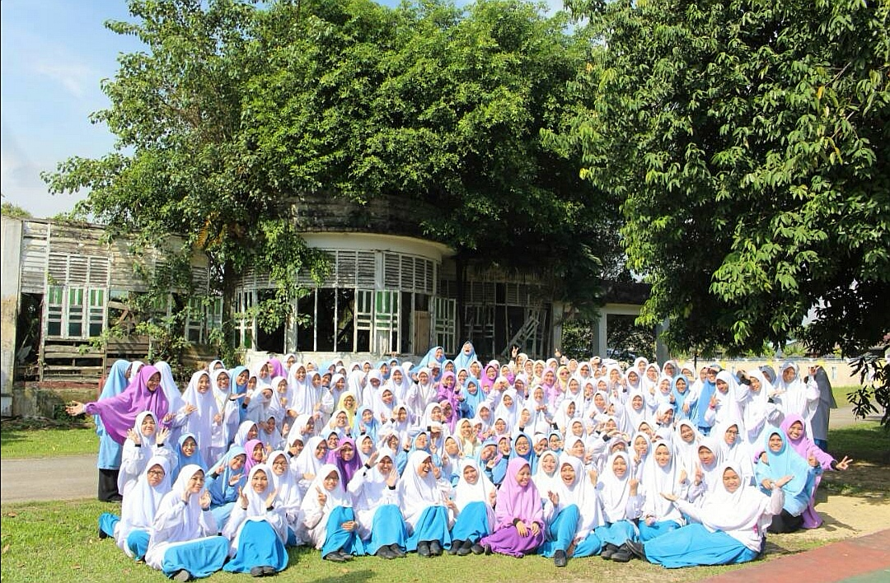
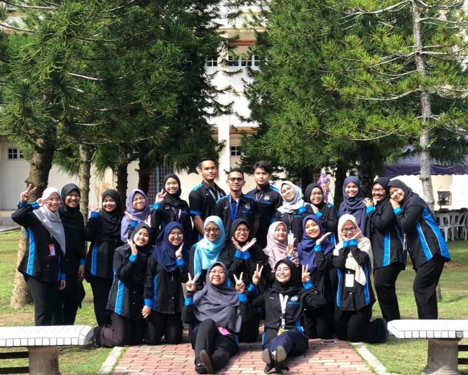
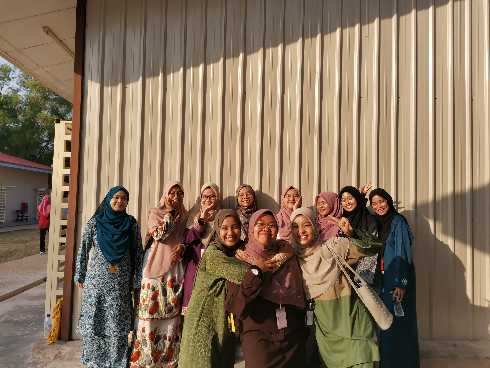

My Friends
Friends. For me, friendship is one of the most component in achieving better life. Yes, we have to choose the right persons for us to declare them as our friends. Friends attitudes could influence us. That is why Rasulullah SAW asked us to befriend with good people with good personalities and good attitudes. Friends. I love the idea where me and my friends being close as we understand each other, we can negotiate in every single thing and we know what best for one and another. I love creating bittersweet memories which I can remember when I am getting older and miss those old time. So, I do have friends, a lot who keep me motivate as we fight for the same goal and loving each other because of Allah SWT. InsyaAllah.

Okay. This group of girls is my friends during my years in KISAS. Our batch do have the boys, but I prefer to talk only about girls. I could not pick few persons to be declared as friends because I befriended with the whole batch! Everyone knows me and I know everyone. This is all because of a tradition in KISAS called as Marhabah Trace where seniors will test us on how well we know each other from our own batch. Common questions were thrown to me are related to the full name of this person, where she comes from, which school she attended before enter KISAS and many more. Because of the sudden questions, I am always could not answer anything because I could not think at that time. To add, this tradition will be pass from batch to batch as the seniors think that this is the effective way to make the juniors know each other. Since the school ended, I miss everyone in the batch.
 
These two photos are photos of my classmates during my diploma in UITM Kedah. Eventhough we just know each other only for two years, I could find myself loving them as much as I love myself. They give me strength every time I feel down with all the assignments, motivate me to overcome my negativity and support everything that I have done. We spend so much time together which help us to get to know everyone just in the short period. Now, I feel sad as we could not gather again because of the current situation and I also feel bothered as we could not meet each other again (except we get to go to the same place for degree) and spend more time together for our last semester.
I love all of my friends, whether they are mention in this entry or not because every person that have entered in my life as a friend has taught something valuable even if it just a small massage. I hope I can keep my relationship with them also befriends with new people in the future.